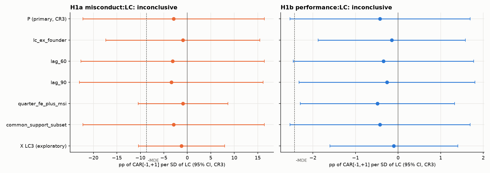

Does concentrated leadership amplify the market's reaction to CEO departures?
We tested this on 739 CEO departures at US listed firms. We found no detectable effect. For performance-related dismissals the evidence rules out all but small effects. For misconduct-related departures there are too few cases to say anything either way.
The question
This study is part of a project on NVIDIA's share decline in October–November 2026, during which leadership news was one of several things moving the stock. A natural idea is that markets react more strongly to leadership news when a company depends heavily on one person. Before relying on that idea, we checked whether it holds across many past CEO departures.
We call the dependence on one person leadership concentration (LC). Our main measure counts two signals in the company's filings: the CEO is a founder, and the CEO is also chair of the board. LC is 0, ½ or 1, then standardised.
We tested two preregistered hypotheses, each against voluntary departures (retirements and planned exits) as the baseline:
- H1a: when a CEO leaves over misconduct, the share price falls more at high-LC firms.
- H1b: when a CEO is dismissed for poor performance, replacing them helps high-LC firms less.
Where the data come from
All inputs are public and were downloaded automatically by the project's scripts on 13–14 November 2026. Each download is logged with its date and a SHA-256 checksum.
| Data | Source and download route | What we used it for | Coverage |
|---|---|---|---|
| CEO departures | Gentry et al. CEO Dismissal Database, archival version of 26 Nov 2025, downloaded as an Excel file from Zenodo: zenodo.org/records/23328926 (CC BY 4.0) | The list of departures and their type: voluntary, performance or misconduct | S&P 1500 firms; we used 2005–2025 |
| Filing index and announcement 8-Ks | SEC EDGAR submissions API (data.sec.gov/submissions) and EDGAR archive (sec.gov/Archives), fetched with a rate limit of about 8 requests per second | Exact announcement dates (8-K Item 5.02) and earnings releases (Item 2.02) | 2004–2026 |
| Proxy statements and 10-Ks | EDGAR archive: the latest DEF 14A, or 10-K if there is none, accepted before the cut-off | Founder status, CEO-chair duality and executive titles | One document per event |
| Company–ticker map | SEC sec.gov/files/company_tickers.json | Linking firms to stock tickers; remapping 8 subsidiary filers to their listed parents | Current listings |
| Financial statements | SEC XBRL API (data.sec.gov/api/xbrl/companyconcept), one request per firm and item | Sales, assets, cash, debt, equity and shares outstanding (financial-vulnerability check) | 2009 on |
| Stock prices | Yahoo Finance through the open-source yfinance Python library | Daily closing prices, volume and splits for 775 tickers and SPY (S&P 500 ETF) | 1993–2026 |
| Market stress inputs | VIX from Yahoo Finance (^VIX); BAA–10-year credit spread (BAA10Y) and the St. Louis Fed Financial Stress Index (STLFSI4) from FRED/ALFRED (fred.stlouisfed.org), with historical vintages | Market stress index, and checking it against the Fed's index | 1994–2025 |
| Trading calendar | The exchange_calendars Python library (NYSE, XNYS) | Counting trading sessions for every window | All dates |
| Successor field (coded, not downloaded) | Claude AI agents read each proxy statement under a fixed codebook; a second model re-coded a random 10% and all flagged cases | Whether another executive held a President or COO title (exploratory three-part measure only) | 1,127 documents |
From the database to the 739 events we analyse
Each step below removes events for a stated reason. The rules were fixed before any returns were computed.
- No price data (577 lost). Most of these firms no longer trade under a current ticker. Recovering them would need licensed data (CRSP), which we did not have. The sample therefore leans toward firms that survived.
- Earnings on the same days (239 lost). When a departure is announced together with results, the price reaction mixes both pieces of news.
- No usable filing (108 lost). No proxy or 10-K before the cut-off, or the CEO's title could not be found in it.
Measuring leadership concentration
For each departure we read the company's last proxy statement (or 10-K) filed at least 30 trading days before the announcement, so the measure cannot reflect the departure news itself. A rule-based text extractor finds the CEO's title (is the CEO also chair?) and biography (did the CEO found the company?).
We checked the extractor against hand-coded samples: founder status was right 92% of the time and duality 96%. The coders were AI models, not people, so this is not human validation. A third signal, whether a designated successor exists, could not be extracted reliably (81% accuracy against a 90% bar). It was coded by AI agents and enters only an exploratory three-part version of the measure.

Measuring the market reaction
The outcome is the abnormal return over three trading days around the announcement (day −1 to day +1), written CAR[−1,+1]. It is the stock's return minus what the stock would normally have done, given the market (SPY) and its industry that day.
"Normal" behaviour is estimated for each stock from roughly one year of prices ending six weeks before the event. We picked this model from four candidates by testing them on 5,000 random dates with no event before 2015. The chosen model flagged 4.7% of those dates as unusual at the 5% level, close to what it should.
Average three-day reactions: voluntary −0.6%, performance −1.8%, misconduct −6.2%.
How the hypotheses were tested
We regressed each departure's abnormal return on its type, its leadership concentration and their interaction. Controls: the stock's normal volatility, firm size, the prior two-month return, CEO tenure, whether the exit was planned, whether a successor was named, industry and calendar month. H1a and H1b are the two interaction terms.
Safeguard. All returns were computed and then sealed with checksums. Nobody looked at them until the full test, its power and its decision rules were frozen.
One change, made before seeing outcomes. We simulated outcomes with no true effect. The preregistered standard errors flagged a false H1a effect about 20% of the time instead of 5%, because only a handful of misconduct cases drive that term. We switched to a more robust jackknife version (CR3), which was close to 5% in the same simulation.

What we found
H1a · misconduct
inconclusiveThe interval covers large drops, no effect and large gains. Too few cases to tell. This is not evidence of no effect.
H1b · performance
inconclusiveClose to zero. Effects larger than about 2.5 points per standard deviation are effectively ruled out.
Each estimate is the extra three-day abnormal return per standard deviation of leadership concentration, relative to voluntary departures, in percentage points. Both p-values are 1.00 after the Holm correction for two tests.


Do the results hold up?
We repeated the test with every variation listed in advance: different ways of coding the successor field, dropping uncertain cases, other measurement dates, and each signal on its own. We also tested whether financial weakness or market-wide stress plays the role leadership concentration was supposed to.


What to keep in mind
- Few misconduct cases. 23 in total, about 17 informative. The misconduct question stays open.
- Survivor bias. 577 departures could not be priced, mostly at firms no longer listed.
- Machine-coded measures. Founder and duality come from a text extractor checked against AI coders, not human ones. An AI audit found about 30 missed duality flags among 48 flagged cases. The main measure also replaces the originally planned three-part measure (a disclosed change).
- Departure types come from media coverage. On announcement-day filings alone, only 19 of 53 misconduct cases read as misconduct.
- Earnings overlap. 22% of departures were dropped because results came out the same days, and they may differ from the rest.